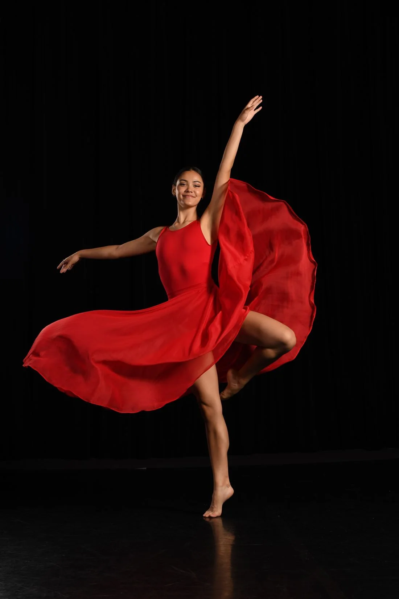
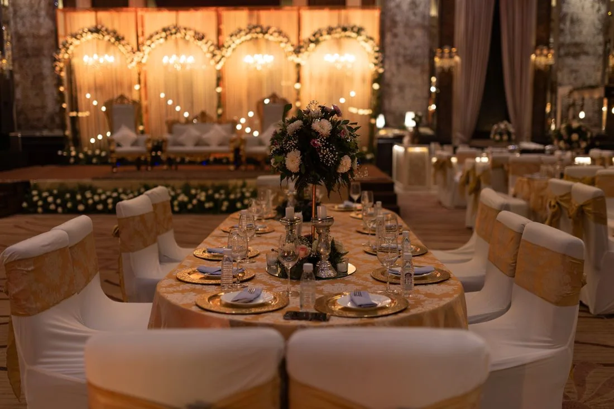
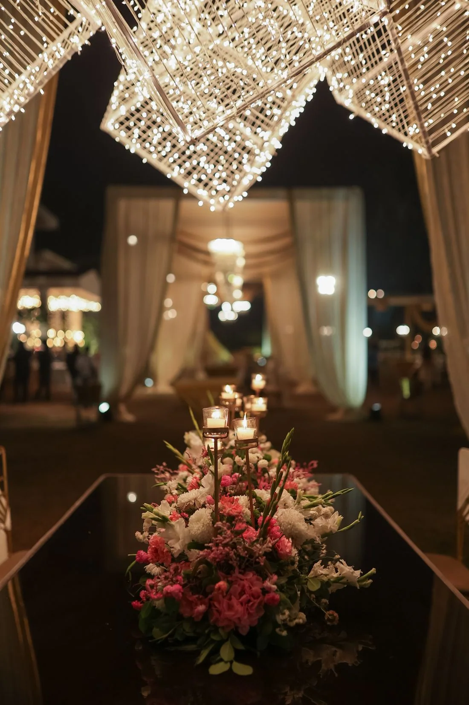

Música en vivo
Solistas, dúos y bandas
Pop, rock, jazz, blues, música popular y otros estilos según el evento.
Una selección abierta de formatos y estilos. La disponibilidad y el precio de cada actuación se confirman de forma individual.
Pop, rock, jazz, blues, música popular y otros estilos según el evento.

Propuestas de animación musical para un ambiente participativo.

Formatos para amenizaciones, fiestas y celebraciones.
Coreografías, espectáculos y opciones artísticas para diferentes espacios.

Celebraciones ambientadas según tus ideas: podemos estudiar estilos, épocas, conceptos y espectáculos relacionados para preparar una propuesta a medida.
Opciones para recepciones, celebraciones corporativas y eventos profesionales.